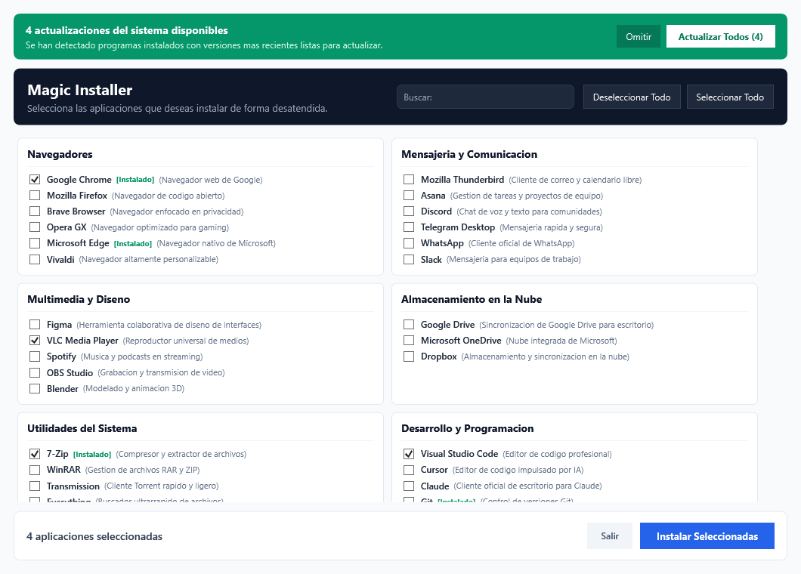
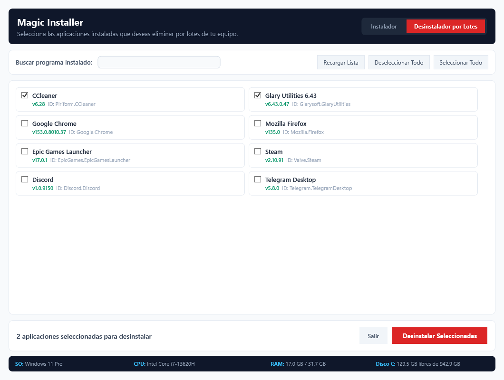

Instalador y Desinstalador
por lotes para Windows
Gestiona, instala y elimina decenas de aplicaciones esenciales en tu equipo en un solo clic. Una alternativa moderna, de código abierto y respaldada por la infraestructura oficial de Microsoft Winget.
Interfaz Gráfica
Diseñada con la estética oscura de Windows, tipografía refinada, buscador en vivo y monitoreo en tiempo real.


Doble Función en un Solo Ejecutable
Instala un entorno de trabajo completo en minutos o realiza limpieza profunda de aplicaciones obsoletas con máxima seguridad.
Instalador por Lotes
Selecciona múltiples programas de entre más de 60 opciones clasificadas (navegadores, desarrollo, diseño, ofimática, seguridad) e instálalos todos de forma desatendida.
- Aceptación automática de contratos y licencias
- Descarga siempre la versión oficial más reciente
- Detección de programas ya instalados con etiqueta [Instalado]
Desinstalador Masivo (Bulk)
Escanea todo el software instalado en el registro de Windows y Winget, excluye librerías internas críticas y permite desinstalar múltiples programas a la vez.
- Buscador en tiempo real para encontrar software específico
- Diálogo de confirmación explícito antes de cualquier acción
- Limpieza de desinstalación silenciosa sin interrupciones
Hardware & Actualizaciones
Monitoriza en vivo la salud de tu sistema con una barra inferior de telemetría de hardware y un escáner en segundo plano de actualizaciones pendientes.
- Lectura en tiempo real de SO, CPU, RAM usada y espacio libre
- Banner verde interactivo si hay software del sistema desactualizado
- Actualización masiva del sistema en un solo clic
Explorador del Catálogo de Aplicaciones
Más de 60 herramientas esenciales verificadas con identificadores oficiales de Winget. Filtra por categoría o busca cualquier aplicación.
Sugerir Nueva Aplicación
¿Echas en falta algún software imprescindible en el catálogo? Envíanos tu propuesta para incorporarlo en la siguiente versión.
¿Cómo Funciona Bajo el Capó?
Cero cajas negras. Magic Installer actúa como una orquesta visual sobre las herramientas nativas de administración de Windows.
Selección Visual en GUI Nativa
La ventana en WPF/XAML se ejecuta de forma nativa sin consumir recursos de frameworks pesados (Electron). Detecta qué programas ya tienes en Windows y te permite marcar casillas o filtrar con el buscador instantáneo.
Despacho Desatendido a Winget
Al hacer clic en Instalar, el proceso envía llamadas silenciosas al gestor de paquetes oficial (winget install --id "..." -e --silent), aceptando acuerdos de licencia automáticamente sin diálogos emergentes.
Descarga Directa del Fabricante
Los archivos binarios provienen directamente de los servidores y URLs de descarga certificadas de cada desarrollador (Google, Mozilla, Microsoft, etc.). Jamás se redistribuyen paquetes modificados ni se instala software espía.
Preguntas Frecuentes
Respuestas claras sobre la seguridad, procedencia de los instaladores y funcionamiento del sistema.